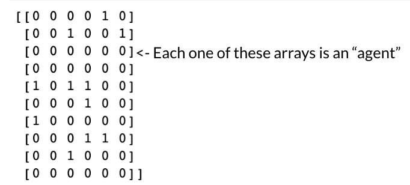
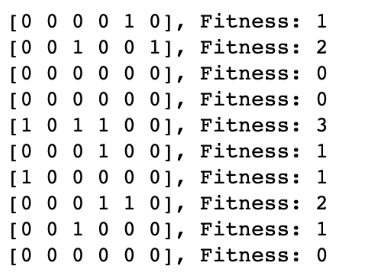
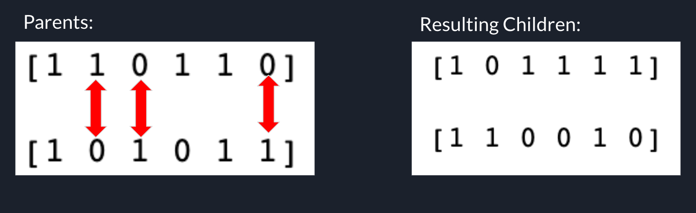
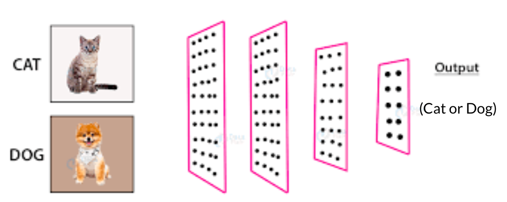

So you’re interested in genetic algorithms, and specifically their application to machine learning. Well, you have come to the right place! Welcome to the GeneticML information page! While other parts of this website serve to demonstrate genetic machine learning algorithms in action, this page serves to provide an overview of genetic algorithms, and specifically their application to machine learning in a traditional, textbook style way. However, what is covered on this page is still motivated by its application. This page is meant to give those with close to zero technical experience a comprehensive understanding of the subject matter, so those with a technical background may find some of this information unnecessary. But, I assure you coder bros, the understanding is very much worth it.
To understand how we can apply genetic algorithms to machine learning, we must first figure out what exactly a genetic algorithm is. A genetic algorithm is the computational process (meaning it’s done by a computer) of finding a solution to a problem using the principles of genetics and natural selection. An example of a problem would be finding a path through a maze, and the solution would be, well, a path through the maze. A demonstration of this is linked here. A genetic algorithm would learn how to solve these problems. Genetic algorithms use the most basic principles of genetics and natural selection first explored by Charles Darwin. In order to demonstrate the process of a genetic algorithm, we will explore a simple example that we will call the “array of six bits” problem. A demonstration of this problem is linked here. Let’s say we have six numbers that can only be 1 or 0 (a bit). What would we choose each number to be in order to get the maximum possible sum of all six numbers? The answer is quite obvious (all numbers must be 1 to get a sum of 6). In this case our problem is finding the maximum possible sum, and our solution is an array of all 1s. For the purpose of demonstration, we will illustrate how to find this solution using a genetic algorithm.
The first step of every genetic algorithm is to generate our initial population that we will use for further steps. We will call each member of our population an agent. In this case, an agent is an array of 6 bits. To generate our initial population, we will create 10 agents with random bit values for each element in the array.
Now that we have our population of agents, how do we figure out which ones are the best? The answer is quite simple: the agents with more 1s are better. We can quantify how good each agent is by finding the sum of each agent’s array. This measure is what we call our fitness function, or a measure of how good an agent is at what we want it to do. So if we want to find the array with the maximum possible sum, our fitness function is the sum of the array of each agent. The higher the result of the fitness function, the better the agent is. If we were applying a genetic algorithm to finding the best way to play Snake, our fitness function would be based on how big the snake got before dying.
According to the principles of natural selection, the better the animal is at surviving, the more likely it is that they will reproduce and pass their superior genes down to the next generation. If an animal is not good at surviving, then it will die and be less likely to reproduce and will not pass its inferior genes down to the next generation. We will use this principle in our genetic algorithm to select only the fittest agents from our population for reproduction and contribution to the next generation. The agents with the highest fitness (in this case the best half) will be selected for the next step: crossover.
Since we can’t just tell two arrays to breed and produce children, we have to do it for them in a process called crossover. This involves swapping the information of two agents to produce new agents (children). There are many methods of crossover, one of which is swapping a randomly chosen, fixed partition of each array to choose children. Instead, we will explore a crossover method called uniform crossover, where the corresponding elements of each array have a 50/50 chance of being swapped, so roughly half of the elements are swapped between the array. From two parents, we have created two unique children. We do this for our entire population to create a sample of our next generation. While the amount of children that result from two parents is fixed in this step, the next step (mutation) will create some “copies” of the children.
When the genetic information of two animals is combined to produce offspring, there is a very low chance of pieces of genetic information changing in what is called a mutation. Mutations can be bad (a mutation that puts you at an increased risk of a disease), they can have no effect at all, or they can be good (a giraffe having a longer neck so it can reach higher, inaccessible leaves. To mimic this principle, genetic algorithms implement mutations in order to prevent premature convergence (the algorithm finding a solution, but there is actually a better solution out there). In our case, mutation will involve randomly copying some children from our last step, and flipping the bits (changing a 1 to a 0 and vise versa) with a very low probability to produce mutations. We will copy and possibly mutate children until we have reached a population size that is equivalent to that of the initial population.
Now we have a whole new population that is hopefully better than the last one. Great! Now, we keep selecting, breeding, and mutating our agents until a solution is found. In this case we would stop when we have found an array that has a sum of 6. Once we have done this, our genetic algorithm is complete! This process/method can be applied to any problem whose solution is represented by many adjustable numbers. One of those applications is… machine learning!
First, let's define what exactly we’re using a genetic algorithm for. In its simplest form, applying a genetic algorithm to machine learning doesn’t mean we use a genetic algorithm to create a machine learning model meaning the structure of an algorithm isn’t determined by a genetic algorithm, we merely train a machine learning model (with a fixed structure) using a genetic algorithm. NEAT (NeuroEvolution of Augmenting Topologies) is a method of applying genetic algorithms to machine learning in which the structures of the models are dynamic, and increase in complexity over time. For our purposes, we will apply genetic algorithms to machine learning in its simplest form.
Machine learning models are algorithms that model a certain process for the purpose of prediction. The models accept inputs (ex. Images, customer usage data, etc.) and produce outputs in the form of a measure (regression) or a category (classification). An example of regression is predicting the next day’s stock price based on the days prior. An example of classification would be using images of cats or dogs to predict whether the image is a cat or a dog. The algorithms that model these processes can be immensely complex, with millions of adjustable numbers that make up the algorithm. In order to get these complex algorithms to accurately predict, for example, cat or dog pictures, the model must be fed a large amount of pictures of cats and dogs (and their corresponding classifications) in order to figure out what makes a picture a cat vs. what makes a picture a dog. This is done by adjusting the millions of numbers (parameters) of the model via some complex calculations involving calculus that don’t need to be covered for our purposes. The process of feeding data into the algorithm and adjusting its parameters to improve its accuracy is a process called training.
 sourceThe process of using existing data to train a machine learning model is called supervised learning. But when relevant training data isn’t available, other training methods must be employed like unsupervised learning or reinforcement learning. Reinforcement learning methods involve the trial and error of untrained machine learning models and improving said models from the results. Applying a genetic algorithm to machine learning is a type of reinforcement learning. If we wanted to create a machine learning model to navigate a maze, we would randomly initialize multiple machine learning models (our initial population), have them try to navigate the maze, select the models that did the best at navigating the maze (selection), perform crossover on the corresponding parameters of the models, copy and mutate, and iterate this process until we get a model that is able to successfully navigate the maze! Better results can be achieved by different fitness functions, different model structures, and adjusting various parameters of the genetic algorithm. The Demos page of GeneticML offers multiple examples of ways that different parameters of a genetic algorithm affect its performance.